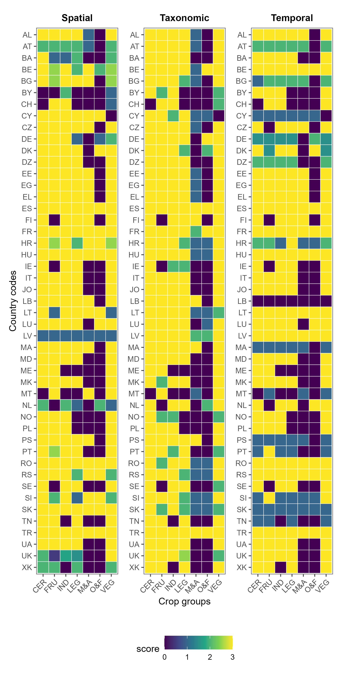

Data Quality Indicators
We assigned data quality scores to crop groups within each country across three dimensions: spatial (administrative level reached), temporal (updating periodicity of data) and taxonomic (number of unique crops reported for a crop group).
The image below summarizes these scores, so that any user of the dataset can easily access the usefulness and limitations of any crop and country data.
